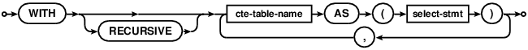
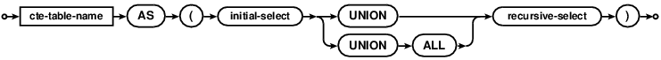

Choose any three.
|
|
SQLite里的SQL
SQL As Understood By SQLite
WITH clause



公用表表达式（CTE）的作用类似临时视图，这个视图仅仅在存在于一条SQL语句中。有两种类型的公用表表达式："普通（ordinary）"和"递归（recursive）"。
普通公用表表达式可以通过将主SQL语句分解为多个子查询来提高查询的可读性。
递归公用表表达式提供了对树或图进行分层或递归查询的能力，这在SQL语言中是别无他选的。
Common Table Expressions or CTEs act like temporary views that exist
only for the duration of a single SQL statement. There are two kinds of
common table expressions: "ordinary" and "recursive". Ordinary
common table expressions are helpful for making
queries easier to understand by factoring
subqueries out of the main SQL statement.
Recursive common table expressions
provide the ability to do hierarchical or
recursive queries of trees and graphs, a capability
that is not otherwise available in the SQL language.
所有的公用表表达式（普通的和递归的）都是通过在SELECT、 INSERT、 DELETE、
或 UPDATE语句前添加一个WITH子句前缀创建的。
一个WITH子句可以指定一个或多个公用表表达式，这些表达式中可以同时包含普通的和递归的。
All common table expressions (ordinary and recursive) are
created by prepending a WITH clause in front of a SELECT, INSERT, DELETE,
or UPDATE statement. A single WITH clause can specify one or more
common table expressions, some of which are ordinary and some of which
are recursive.
普通公用表表达式
Ordinary Common Table Expressions
一个普通公用表表达式就像一个只存在于一条单独语句中的视图一样。
普通公用表表达式主要用于分解子查询以提高整个SQL语句的可读性。
An ordinary common table expression works as if it were a view that
exists for the duration of a single statement. Ordinary common table
expressions are useful for factoring out subqueries and making the overall
SQL statement easier to read and understand.
一个WITH子句即使使用了RECURSIVE关键词也同样可以包含一个普通公用表表达式。使用RECURSIVE不会强制公用表表达式成为递归的。
A WITH clause can contain ordinary common table expressions even if
it includes the RECURSIVE keyword. The use of RECURSIVE does not force
common table expressions to be recursive.
递归公用表表达式
Recursive Common Table Expressions
递归公用表表达式可以用来写一个遍历树或图的查询。递归公用表表达式的基本语法与普通公用表表达式是一样的，但是增加下列附加特性：
A recursive common table expression can be used to write a query that
walks a tree or graph. A recursive common table expression has the same
basic syntax as an ordinary common table expression, but with the following
additional features:
- "select-stmt"必须是一个复合 select且最右边的compound-operator必须是UNION或UNION ALL。
The "select-stmt" must be a compound select where the right-most compound-operator is either UNION or UNION ALL. - AS关键词左边的表名必须在复合SELECT的最右边的SELECT语句的FROM子句中出现一次，且仅出现一次，其他地方都不能出现。
The table named on the left-hand side of the AS keyword must appear exactly once in the FROM clause of the right-most SELECT statement of the compound select, and nowhere else.
换句话说，递归公用表表达式必须类似下面形式：
To put it another way, a recursive common table expression must
look like the following:

在递归公用表表达式中引用名为cte-table-name的表作为"递归表"。
在上面的recursive-cte气泡图中，递归表只能在recursive-select的FROM子句中出现且仅出现一次，并且不能出现在initial-select或recursive-select的其它任何地方，包括子查询。
initial-select可以是复合SELECT，但是不能使用ORDER BY、LIMIT或OFFSET。
recursive-select必须是一个简单SELECT，不能是复合的。recursive-select中可以使用ORDER BY、LIMIT和OFFSET。
We refer to the table named by the cte-table-name in a recursive
common table expression as the "recursive table".
In the recursive-cte bubble diagram above, the recursive
table must appear exactly once in the FROM clause of the recursive-select
and must not appear anywhere else in either the initial-select or the
recursive-select, including subqueries. The initial-select may be
a compound select, but it may not include an ORDER BY, LIMIT, or OFFSET.
The recursive-select must be a simple select, not a compound. The
recursive-select is allowed to include an ORDER BY, LIMIT, and/or OFFSET.
计算递归表内容的基本算法如下：
The basic algorithm for computing the content of the recursive table
is as follows:
- 允许initial-select并将结果加入队列。
Run the initial-select and add the results to a queue. - 当队列不为空时：
While the queue is not empty:- 从队列中提取一行。
Extract a single row from the queue. - 将这一行插入到递归表中。
Insert that single row into the recursive table - 假定刚才提取的这一行是递归表中唯一的一行，并运行recursive-select将所有结果加入到队列中。
Pretend that the single row just extracted is the only row in the recursive table and run the recursive-select, adding all results to the queue.
- 从队列中提取一行。
上面的基本过程可能会被下列附加规则修改。
The basic procedure above may modified by the following additional rules:
如果使用UNION操作符连接initial-select和recursive-select，那么只有之前队列里没有插入相同行的行才会插入到队列中。 重复的行在插入队列之前就会被抛弃，即使在递归中那条重复行已经从队列中提取出来也同样会被抛弃。如果操作符是UNION ALL，那么initial-select and 和 recursive-select生成的所有行就算重复也全都会被加入到队列中。在判断一行是否重复时，NULL与其它的NULL相同，但是与其他值都不相同。
If a UNION operator connects the initial-select with the recursive-select, then only add rows to the queue if no identical row has been previously added to the queue. Repeated rows are discarded before being added to the queue even if the repeated rows have already been extracted from the queue by the recursion step. If the operator is UNION ALL, then all rows generated by both the initial-select and the recursive-select are always added to the queue even if they are repeats. When determining if a row is repeated, NULL values compare equal to one another and not equal to any other value.如果提供了LIMIT子句，这个参数决定了步骤2b中添加到递归表中行数的最大值。一旦达到了限制，则递归结束。如果LIMIT值为零，那么意味着一行都不会加入进递归表中。LIMIT值为负数表示对加入递归表的行数量没有限制。
The LIMIT clause, if present, determines the maximum number of rows that will ever be added to the recursive table in step 2b. Once the limit is reached, the recursion stops. A limit of zero means that no rows are ever added to the recursive table, and a negative limit means an unlimited number of rows may be added to the recursive table.如果有OFFSET子句，并且值为正数N，那么会阻止前N行记录被加入到递归表中。但是前N条记录已然会被 recursive-select处理，只是不加入到递归表中。所有被OFFSET跳过的行都不会算到LIMIT计数中。
The OFFSET clause, if it is present and has a positive value N, prevents the first N rows from being added to the recursive table. The first N rows are still processed by the recursive-select; they just are not added to the recursive table. Rows are not counted toward fulfilling the LIMIT until all OFFSET rows have been skipped.如果有ORDER BY子句，这个子句决定了在步骤2a中哪一条会被从队列中取出来。如果没有使用ORDER BY子句队列中记录的提取顺序是未知的。（在当前实现中，如果没有使用ORDER BY子句，那么这个队列是一个FIFO队列，但是应用不应当依赖这个事实，因为这个是会改变的。）
If an ORDER BY clause is present, it determines the order in which rows are extracted from the queue in step 2a. If there is no ORDER BY clause, then the order in which rows are extracted is undefined. (In the current implementation, the queue becomes a FIFO if the ORDER BY clause is omitted, but applications should not depend on that fact since it might change.)
递归查询示例：
Recursive Query Examples
下面的查询返回1到1000000之间的所有整数。
The following query returns all integers between 1 and 1000000:
WITH RECURSIVE cnt(x) AS (VALUES(1) UNION ALL SELECT x+1 FROM cnt WHERE x<1000000) SELECT x FROM cnt;
思考一下这条查询是如何执行的。首先允许initial-select，返回一个只有一行一列的值"1"。这一行记录被加入到队列中。步奏2a，从队列中提取一行并添加到"cnt"中。然后依照步奏2c运行recursive-select 返回一个结果值"2"并将结果加入队列中。这时队列里依然有一行 记录，所以继续重复步奏2。依照步奏2a和2b，提取"2"这一行记录并加入到递归表中。这时就当做递归表中只有记录"2"，再一次运行recursive-select，得到结果值"3"并将其加入到队列中。一直这样重复999999次，直到队列里只有"1000000"这一个值。这一行记录被提取并加入到递归表中。但是这一次，WHERE子句会使recursive-select返回零行结果，所以队列变空，递归结束。
Consider how this query works. The initial-select
runs first and returns a single row
with a single column "1". This one row is added to the queue. In
step 2a, that one row is extracted from the queue and added to "cnt".
Then the recursive-select is run in accordance with step 2c generating
a single new row with value "2" to add to the queue. The queue still
has one row, so step 2 repeats. The "2" row is extracted and added to the
recursive table by steps 2a and 2b. Then the row containing 2 is used
as if it were the complete content of the recursive table and the
recursive-select is run again, resulting in a row with value "3" being added
to the queue. This repeats 999999 times until finally at step 2a the
only value on the queue is a row containing 1000000. That row is
extracted and added to the recursive table. But this time, the
WHERE clause causes the recursive-select to return no rows, so the
queue remains empty and the recursion stops.
优化笔记：
Optimization note:
在上面的讨论中，类似"将这行记录插入到递归表中"的语句只是个概念，而不是准确的理解。这听起来像是SQLite累积了一个包含一百万行记录的大表，然后从顶到底的扫描表来生成结果。事实上查询优化器会发现"cnt"递归表中的值都只会仅仅使用一次，所以当每行加入到递归表时，这行记录就会立即作为主查询语句的结果返回并释放掉。SQLite不会累积一个包含一百万行记录的临时表。允许上面的示例只需要很少的内存。然而，如果示例使用的是UNION而不是UNION ALL，那么SQLite需要保存所有之前生成的结果用来做重复检查。由于这个原因，程序员们如果可能应当尽量的使用UNION ALL而不是UNION。
In the discussion above, statements like "insert the row into
the recursive table" should be understood conceptually, not literally.
It sounds as if SQLite is accumulating a huge table
containing one million rows, then going back and scanning that table
from top to bottom to generate the result. What really happens
is that the query optimizer sees that values in the
"cnt" recursive table are only used once. So as each row is added to
the recursive table, that row is immediately returned as a result of the main
SELECT statement and then discarded. SQLite does not accumulate
a temporary table containing a million rows. Very little memory is
needed to run the above example. However, if the example had used
UNION instead of UNION ALL, then SQLite would have had to keep around
all previously generated content in order to check for duplicates.
For this reason, programmers should strive to use UNION ALL instead
of UNION when feasible.
下面是前一个例子的变种：
Here is a variation on the previous example:
WITH RECURSIVE
cnt(x) AS (
SELECT 1
UNION ALL
SELECT x+1 FROM cnt
LIMIT 1000000
)
SELECT x FROM cnt;
在这个变种里有两个不同点。 initial-select使用"SELECT 1" 替代了 "VALUES(1)"。不过这只是同一件事儿的两种表述方式。另一个变化时时使用LIMIT来停止递归，而不是WHERE子句。LIMIT的含义是当有一百万行记录加入到"cnt"表中时（对查询优化器而言就是主查询返回的记录数），不管队列中还有多少记录，都立即停止递归。在更复杂的查询中，通常很难确保WHERE子句最终能够清空队列并结束递归。但是LIMIT子句却总能停止递归。所以在查询中始终包含一个LIMIT子句作为递归上限的保险是一个非常好的习惯。
There are two differences in this variation. The initial-select is
"SELECT 1" instead of "VALUES(1)". But those are just different
syntaxes for saying exactly the same thing. The other change is that the
recursion is stopped by a LIMIT rather than a WHERE clause. The use of
LIMIT means that when the one-millionth row is added to the "cnt" table
(and returned by the main SELECT, thanks to the query optimizer)
then the recursion stops immediately regardless of how many rows might be
left in the queue. On more complex queries, it can sometimes be
difficult to ensure that the WHERE clause will eventually cause the
queue to drain and the recursion to terminate. But the LIMIT clause will
always stop the recursion. So it is good practice to always include a
LIMIT clause as a safety if an upper bound on the size of the recursion
is known.
分层查询示例
Hierarchical Query Examples
假设描述组织成员的表，同时还保存了组织的领导关系链。
有一个Consider a table that describes the members of an organization as well as the chain-of-command within that organization:
CREATE TABLE org( name TEXT PRIMARY KEY, boss TEXT REFERENCES org, height INT, -- 忽略其他内容 );
组织内的每个成员都有名字，并且大多数成员都只有唯一一个领导。（整个组织的最高领导的"boss"字段为NULL）"org"表中的记录来自于一个树形关系图。
Every member in the organization has a name, and most members have
a single boss. (The head of the whole organization has a NULL
"boss" field.) The rows of the "org" table form a tree.
下面的查询是计算Alice的部门内包括Alice在内所有人的平均高度：
Here is a query that computes the average height over everyone
in Alice's organization, including Alice:
WITH RECURSIVE
works_for_alice(n) AS (
VALUES('Alice')
UNION
SELECT name FROM org, works_for_alice
WHERE org.boss=works_for_alice.n
)
SELECT avg(height) FROM org
WHERE org.name IN works_for_alice;
下面的例子中在一个WITH子句里使用了两个公用表表达式。下面的表记录了一个族谱
The next example uses two
common table expressions in a single WITH clause.
The following table records a family tree:
CREATE TABLE family( name TEXT PRIMARY KEY, mom TEXT REFERENCES family, dad TEXT REFERENCES family, born DATETIME, died DATETIME, -- 如果还活着则为NULL -- 其它内容 );
"family"表和前面的"org"表类似，只不过现在一个成员拥有父母亲两人。我们想要知道Alice的所有在世的祖先，按照从老到年轻的顺序排列。首先定义一个名为"parent_of"的普通公用表表达式。这个普通CTE是一个可以用来找到任何人的双亲的视图。这个普通CTE会在递归CTE"ancestor_of_alice"中使用。递归CTE会用在最总查询当中：
The "family" table is similar to the earlier "org" table except that
now there are two parents to each member.
We want to know all living ancestors of Alice, from oldest to youngest.
An ordinary common table expression, "parent_of", is defined first. That
ordinary CTE is a view that can be used to find all parents of any
individual. That ordinary CTE is then used in the "ancestor_of_alice"
recursive CTE. The recursive CTE is then used in the final query:
WITH RECURSIVE
parent_of(name, parent) AS
(SELECT name, mom FROM family UNION SELECT name, dad FROM family),
ancestor_of_alice(name) AS
(SELECT parent FROM parent_of WHERE name='Alice'
UNION ALL
SELECT parent FROM parent_of JOIN ancestor_of_alice USING(name))
SELECT family.name FROM ancestor_of_alice, family
WHERE ancestor_of_alice.name=family.name
AND died IS NULL
ORDER BY born;
针对图的查询
Queries Against A Graph
一个版本控制系统(VCS)通常会将一个项目的版本演变历史存储为一个有向非循环图(DAG)中。将项目的每个版本称作为一个"checkin"。一个checkin可以有零个或者多个父节点，大多数的checkin（除了第一个）都只有一个单独的父节点，但是在合并的情况中，一个checkin可能会有两个、三个、甚至多个父节点。用来保存checkin足迹和发生顺序的结构大概是如下结构：
A version control system (VCS) will typically store the evolving
versions of a project as a directed acyclic graph (DAG). Call each
version of the project a "checkin". A single
checkin can have zero or more parents. Most checkins (except the
first) have a single parent, but in the case of a merge, a checkin
might have two or three or more parents. A schema to keep track of
checkins and the order in which they occur might look something like
this:
CREATE TABLE checkin( id INTEGER PRIMARY KEY, mtime INTEGER -- timestamp when this checkin occurred ); CREATE TABLE derivedfrom( xfrom INTEGER NOT NULL REFERENCES checkin, -- parent checkin xto INTEGER NOT NULL REFERENCES checkin, -- derived checkin PRIMARY KEY(xfrom,xto) ); CREATE INDEX derivedfrom_back ON derivedfrom(xto,xfrom);
这个图是非循环的，并且我们假设每个子checkin的mtime不会小于他的所有父节点。不过不像前面的例子，这个图的任意两个checkin之间可能会有多条不同长度的路径。
This graph is acyclic. And we assume that the mtime of every
child checkin is no less than the mtime of all its parents. But
unlike the earlier examples, this graph might have multiple paths of
differing lengths between any two checkins.
我们希望能迅速获得checkin "@BASELINE" 最新的20个祖先（在整个DAG中有成千上万的祖先）。（在Fossil VCS中使用了一个类似的查询来展示一个checkin的最近的N个祖先。例如：http://www.sqlite.org/src/timeline?p=trunk&n=30）
We want to know the twenty most recent ancestors in time (out of
the thousands and thousands of ancestors in the whole DAG) for
checkin "@BASELINE". (A query similar to this is used
by the Fossil VCS to
show the N most recent ancestors of a check. For example:
http://www.sqlite.org/src/timeline?p=trunk&n=30.)
WITH RECURSIVE
ancestor(id,mtime) AS (
SELECT id, mtime FROM checkin WHERE id=@BASELINE
UNION
SELECT derivedfrom.xfrom, checkin.mtime
FROM ancestor, derivedfrom, checkin
WHERE ancestor.id=derivedfrom.xto
AND checkin.id=derivedfrom.xfrom
ORDER BY checkin.mtime DESC
LIMIT 20
)
SELECT * FROM checkin JOIN ancestor USING(id);
递归查询中的"ORDER BY checkin.mtime DESC"片段通过阻止查询合并进来的很老的分支，这样可以使查询运行的更加快速。ORDER BY强制递归查询关注最新的checkin，也就是我们想要的结果。如果在递归查询中没有ORDER BY子句，那么必须完整计算上千的祖先，然后按照mtime排序，最后取最新的二十个。
ORDER BY实质上是设置了一个优先队列，强制递归查询首先寻找最新的祖先，同时允许使用LIMIT子句来查询限制在感兴趣的范围内。
The "ORDER BY checkin.mtime DESC" term in the recursive-select makes
the query run much faster by preventing it from following
branches that merge checkins
from long ago. The ORDER BY forces the recursive-select to focus
on the most recent checkins, the ones we want. Without the ORDER BY
on the recursive-select, one would be forced to compute the complete set of
thousands of ancestors, sort them all by mtime, then take the top twenty.
The ORDER BY essentially sets up a priority queue that
forces the recursive query to look at the most recent ancestors first,
allowing the use of a LIMIT clause to restrict the scope of the
query to just the checkins of interest.
使用ORDER BY来控制在树搜索中是深度优先还是广度优先。
Controlling Depth-First Versus Breadth-First Search Of a Tree
Using ORDER BY
递归查询中的ORDER BY子句可以用来控制在树搜索中使用深度优先还是广度优先。举例来说，我们使用上面例子中的"org"表的一个变体，去掉"height"列，并且插入一些实际数据：
An ORDER BY clause on the recursive-select can be used to control
whether the search of a tree is depth-first or breadth-first. To
illustrate, we will use a variation on the "org" table from an example
above, without the "height" column, and with some real data inserted:
CREATE TABLE org(
name TEXT PRIMARY KEY,
boss TEXT REFERENCES org
) WITHOUT ROWID;
INSERT INTO org VALUES('Alice',NULL);
INSERT INTO org VALUES('Bob','Alice');
INSERT INTO org VALUES('Cindy','Alice');
INSERT INTO org VALUES('Dave','Bob');
INSERT INTO org VALUES('Emma','Bob');
INSERT INTO org VALUES('Fred','Cindy');
INSERT INTO org VALUES('Gail','Cindy');
下面的查询是按照广度优先来展示树结构：
Here is a query to show the tree structure in a breadth-first pattern:
WITH RECURSIVE
under_alice(name,level) AS (
VALUES('Alice',0)
UNION ALL
SELECT org.name, under_alice.level+1
FROM org JOIN under_alice ON org.boss=under_alice.name
ORDER BY 2
)
SELECT substr('..........',1,level*3) || name FROM under_alice;
"ORDER BY 2"子句（含义与"ORDER BY under_alice.level+1"相同）会在组织结构图优先处理高级别的（"level"值最小的），结果就是广度优先搜索。输出结果如下：
The "ORDER BY 2" (which means the same as "ORDER BY under_alice.level+1")
causes higher levels in the organization chart (with smaller "level" values)
to be processed first, resulting in a breadth-first search. The output is:
Alice ...Bob ...Cindy ......Dave ......Emma ......Fred ......Gail
然而，如果我们修改ORDER BY子句，添加"DESC"修饰语，这会使递归查询在组织结构图种优先处理低级别的（"level"值最大的），结果就是深度优先搜索：
But if we change the ORDER BY clause to add the "DESC" modifier, that will
cause lower levels in the organization (with larger "level" values) to be
processed first by the recursive-select, resulting in a depth-first search:
WITH RECURSIVE
under_alice(name,level) AS (
VALUES('Alice',0)
UNION ALL
SELECT org.name, under_alice.level+1
FROM org JOIN under_alice ON org.boss=under_alice.name
ORDER BY 2 DESC
)
SELECT substr('..........',1,level*3) || name FROM under_alice;
这个修改后的查询的输出是：
The output of this revised query is:
Alice ...Bob ......Dave ......Emma ...Cindy ......Fred ......Gail
如果在递归查询中省略了ORDER BY子句，那么队列会按照先进先出来处理，结果就是广度优先搜索。
When the ORDER BY clause is omitted from the recursive-select, the
queue behaves as a FIFO, which results in a breadth-first search.
古怪的递归查询例子
Outlandish Recursive Query Examples
下面的查询计算一个曼德博集合的近似结果并且使用ASCII图形来输出结果：
The following query computes an approximation of the Mandelbrot Set
and outputs the result as ASCII-art:
WITH RECURSIVE
xaxis(x) AS (VALUES(-2.0) UNION ALL SELECT x+0.05 FROM xaxis WHERE x<1.2),
yaxis(y) AS (VALUES(-1.0) UNION ALL SELECT y+0.1 FROM yaxis WHERE y<1.0),
m(iter, cx, cy, x, y) AS (
SELECT 0, x, y, 0.0, 0.0 FROM xaxis, yaxis
UNION ALL
SELECT iter+1, cx, cy, x*x-y*y + cx, 2.0*x*y + cy FROM m
WHERE (x*x + y*y) < 4.0 AND iter<28
),
m2(iter, cx, cy) AS (
SELECT max(iter), cx, cy FROM m GROUP BY cx, cy
),
a(t) AS (
SELECT group_concat( substr(' .+*#', 1+min(iter/7,4), 1), '')
FROM m2 GROUP BY cy
)
SELECT group_concat(rtrim(t),x'0a') FROM a;
In this query, the "xaxis" and "yaxis" CTEs define the grid of points for which the Mandelbrot Set will be approximated. Each row in the "m(iter,cx,cy,x,y)" CTE means that after "iter" iterations, the Mandelbrot iteration starting at cx,cy has reached point x,y. The number of iterations in this example is limited to 28 (which severely limits the resolution of the computation, but is sufficient for low-resolution ASCII-art output). The "m2(iter,cx,cy)" CTE holds the maximum number of iterations reached when starting at point cx,cy. Finally, each row in the "a(t)" CTE holds a string which is a single line of the output ASCII-art. The SELECT statement at the end just queries the "a" CTE to retrieve all lines of ASCII-art, one by one.
Running the query above in an SQLite command-line shell results in the following output:
....#
..#*..
..+####+.
.......+####.... +
..##+*##########+.++++
.+.##################+.
.............+###################+.+
..++..#.....*#####################+.
...+#######++#######################.
....+*################################.
#############################################...
....+*################################.
...+#######++#######################.
..++..#.....*#####################+.
.............+###################+.+
.+.##################+.
..##+*##########+.++++
.......+####.... +
..+####+.
..#*..
....#
+.
下面的查询用来解决一个数独谜题。这个谜题的状态使用一个81个字符的字符串来定义，从谜题集中一行一行的从左到右的读取整个记录。谜题中空白的方格使用"."字符来表示。这就是输入字符串：
This next query solves a Sudoku puzzle. The state of the puzzle is
defined by an 81-character string formed by reading entries from the
puzzle box row by row from left to right and then from top to bottom.
Blank squares in the puzzle are denoted by a "." character.
Thus the input string:
53..7....6..195....98....6.8...6...34..8.3..17...2...6.6....28....419..5....8..79
相应的谜题是这样：
Corresponds to a puzzle like this:
5 3 7 6 1 9 5 9 8 6 8 6 3 4 8 3 1 7 2 6 6 2 8 4 1 9 5 8 7 9
下面是解决这个谜题的查询：
This is the query that solves the puzzle:
WITH RECURSIVE
input(sud) AS (
VALUES('53..7....6..195....98....6.8...6...34..8.3..17...2...6.6....28....419..5....8..79')
),
digits(z, lp) AS (
VALUES('1', 1)
UNION ALL SELECT
CAST(lp+1 AS TEXT), lp+1 FROM digits WHERE lp<9
),
x(s, ind) AS (
SELECT sud, instr(sud, '.') FROM input
UNION ALL
SELECT
substr(s, 1, ind-1) || z || substr(s, ind+1),
instr( substr(s, 1, ind-1) || z || substr(s, ind+1), '.' )
FROM x, digits AS z
WHERE ind>0
AND NOT EXISTS (
SELECT 1
FROM digits AS lp
WHERE z.z = substr(s, ((ind-1)/9)*9 + lp, 1)
OR z.z = substr(s, ((ind-1)%9) + (lp-1)*9 + 1, 1)
OR z.z = substr(s, (((ind-1)/3) % 3) * 3
+ ((ind-1)/27) * 27 + lp
+ ((lp-1) / 3) * 6, 1)
)
)
SELECT s FROM x WHERE ind=0;
"input" CTE定义了输入谜题。 "digits" CTE定义了一个包含1到9所有数字的表。
解题的工作由"x"CTE进行。
x(s,ind)中的一个记录表示一个81字符的字符串"s"是一个有效的数独问题（没有冲突）并且第一个位置的字符在"ind"位置处，如果ind==0表示所有的字符位置都填满了。
查询的目标就是计算出一个实体"x"相应的"ind"为0。
The "input" CTE defines the input puzzle.
The "digits" CTE defines a table that holds all digits between 1 and 9.
The work of solving the puzzle is undertaken by the "x" CTE.
An entry in x(s,ind) means that the 81-character string "s" is a valid
sudoku puzzle (it has no conflicts) and that the first unknown character
is at position "ind", or ind==0 if all character positions are filled in.
The goal, then, is to compute entries for "x" with an "ind" of 0.
求解程序通过向"x"递归表中添加新的实体来实现。给一个先前的记录，递归查询会试图在新的空位中填入1到9所有的值。复杂的"NOT EXISTS"子查询可以神奇的指出每一个候选的"s"字符串是否是一个有效的数独问题。
The solver works by adding new entries to the "x" recursive table.
Given prior entries, the recursive-select tries to fill in a single new
position with all values between 1 and 9 that actually work in that
position. The complicated "NOT EXISTS" subquery is the magic that
figures out whether or not each candidate "s" string is a valid
sudoku puzzle or not.
最终答案通过寻找一个ind==0的字符串来寻找。如果原始的数独问题没有一个唯一的答案，那么这个查询会返回所有可能的结果。如果原始的问题是无法解决的，那么不会返回结果。这个例子中，唯一的答案是：
The final answer is found by looking for a string with ind==0.
If the original sudoku problem did not have a unique solution, then
the query will return all possible solutions. If the original problem
was unsolvable, then no rows will be returned. In this case, the unique
answer is:
534678912672195348198342567859761423426853791713924856961537284287419635345286179
这个解决方案在现代工作站上可以在300毫秒以内计算出来。
The solution was computed in less than 300 milliseconds on a modern
workstation.
局限性和注意事项
Limitations And Caveats
WITH子句不能在CREATE TRIGGER中使用。
The WITH clause cannot be used within a CREATE TRIGGER.WITH子句必须在顶层SELECT语句的开始处使用，或者是子查询的开始处。WITH子句不能使用在复合查询的第二个或者后续的查询语句中。
The WITH clause must appear at the beginning of a top-level SELECT statement or at the beginning of a subquery. The WITH clause cannot be prepended to the second or subsequent SELECT statement of a compound select.SQL:1999说明书要求包含递归通用表表达式的任何WITH语句中都需要在WITH关键词后面跟随一个RECURSIVE关键词。然而，为了兼容SQLServer和Oracle，SQLite没有执行这条规则。
The SQL:1999 spec requires that the RECURSIVE keyword follow WITH in any WITH clause that includes a recursive common table expression. However, for compatibility with SqlServer and Oracle, SQLite does not enforce this rule.